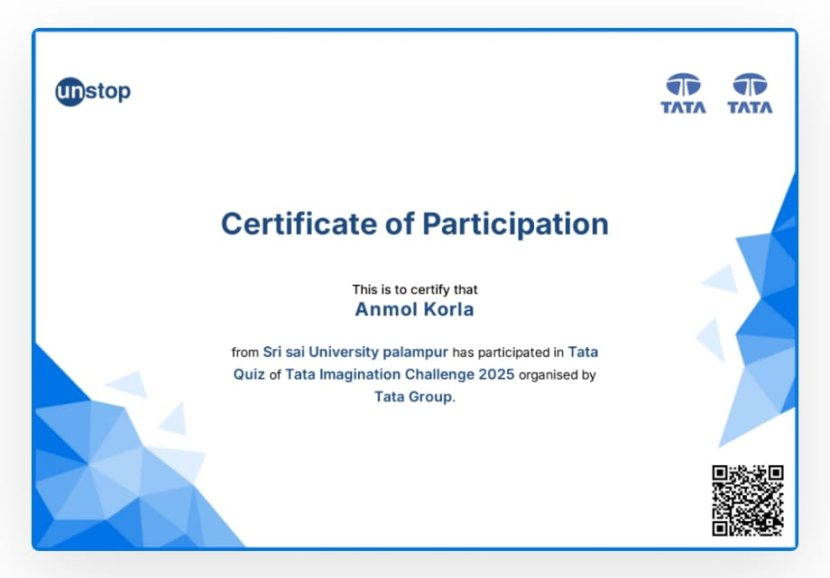

Executive Summary
Anmol Korla is a published technical author, cloud infrastructure engineer, and systems builder operating distinctly ahead of conventional academic timelines. While pursuing his Bachelor of Computer Applications (BCA) at Sri Sai University, Palampur, he concurrently completed an intensive 18-month Professional Certification Program (PCP) in Computer Science & Engineering specializing in Cloud Computing and DevOps at iHub DivyaSampark, IIT Roorkee.
Unlike conventional developers reliant on heavy cloud abstractions, Anmol builds deterministic, resource-optimized production systems engineered for peak efficiency on constrained hardware. Combining published systems literature, air-gapped AI retrieval engines, standalone observability infrastructure, and verified national representation (Techfest, IIT Bombay & Tata Group), his body of work reflects strong engineering discipline, autonomy, and execution speed.
Published Engineering Literature
Production DevOps: The Real-World Engineering Manual
Authored and published independently on Amazon KDP, Production DevOps: The Real-World Engineering Manual is a practitioner-focused engineering handbook designed to bridge theoretical cloud concepts with battle-tested automation. The manual breaks down production-grade CI/CD pipelines, container orchestration, fault tolerance, reverse-proxy routing, and zero-downtime deployment patterns for real-world engineering teams.
Flagship Systems & Engineering Projects
Operating across a production-oriented stack—Docker, Jenkins, GitHub Webhooks, Linux, Nginx, Python, FastAPI, Flask, FAISS, Ollama, SQLAlchemy, AWS, and Microsoft Azure—Anmol has built and deployed multiple specialized systems:
- RepoGPT — Air-Gapped, CPU-Optimized Local AI & RAG Engine: Engineered a private Retrieval-Augmented Generation (RAG) system capable of fast semantic codebase intelligence on standard CPU hardware without GPU overhead. Built with Ollama,
nomic-embed-text embeddings, FAISS vector indexing, and an asynchronous FastAPI backend with a Web UI.
- HIM-RESILIENCE — Tactical Disaster Management & Spatial Routing Node: Built a real-time emergency response and shelter-routing web platform tailored for the mountainous terrain of Himachal Pradesh. Integrates live spatial telemetry, dynamic routing, and interactive mapping using Python, Leaflet, OpenStreetMap, and Tailwind CSS.
- VIGIL — Standalone Runtime Telemetry & Infrastructure Observability Engine: Developed a self-hosted process monitoring and anomaly detection engine from scratch using Python, Flask, and
psutil, featuring automated multi-channel incident alerting via Twilio and SMTP.
- Hardcore End-to-End DevOps Lifecycle & AutoDeploy Platform: Designed zero-touch CI/CD delivery pipelines connecting GitHub Webhooks, Jenkins, Nginx reverse proxies, and Docker containers for automated build, test, and container deployment workflows.
- Serverless Smart Attendance & Event-Driven Cloud Backend: Built a stateless, auto-scaling cloud microservices backend leveraging AWS Lambda, API Gateway, DynamoDB, and Python with zero idle compute overhead.
Academic & Technical Credentials
- Professional Certification Program (PCP) in Cloud Computing & DevOps — iHub DivyaSampark, IIT Roorkee (18-Month Intensive Specialization)
- Bachelor of Computer Applications (BCA) — Sri Sai University, Palampur
Verified Institutional Leadership & Recognitions
1. College Ambassador — Techfest, IIT Bombay (All-India Rank Under 15,000)
Formally awarded a Certificate of Appreciation by Techfest, IIT Bombay—Asia’s largest annual science and technology festival hosted by the Indian Institute of Technology (IIT) Bombay, which attracts over 1,75,000+ participants from 2,500+ institutions globally each year. Serving as an official College Ambassador within this competitive nationwide network, Anmol achieved a verified standing of Rank under 15,000 while leading regional student outreach, driving technical event participation, and acting as the institutional liaison with the IIT Bombay organizing committee (authenticated by Faculty Advisor Prof. Nagendra R. Velaga and Overall Coordinator Ishan Patni).

2. Tata Imagination Challenge — Tata Group (National Corporate Circuit)
Represented Sri Sai University, Palampur in the national Tata Imagination Challenge organized by the Tata Group, demonstrating structured strategic reasoning and enterprise problem-solving in a premier corporate innovation arena.
